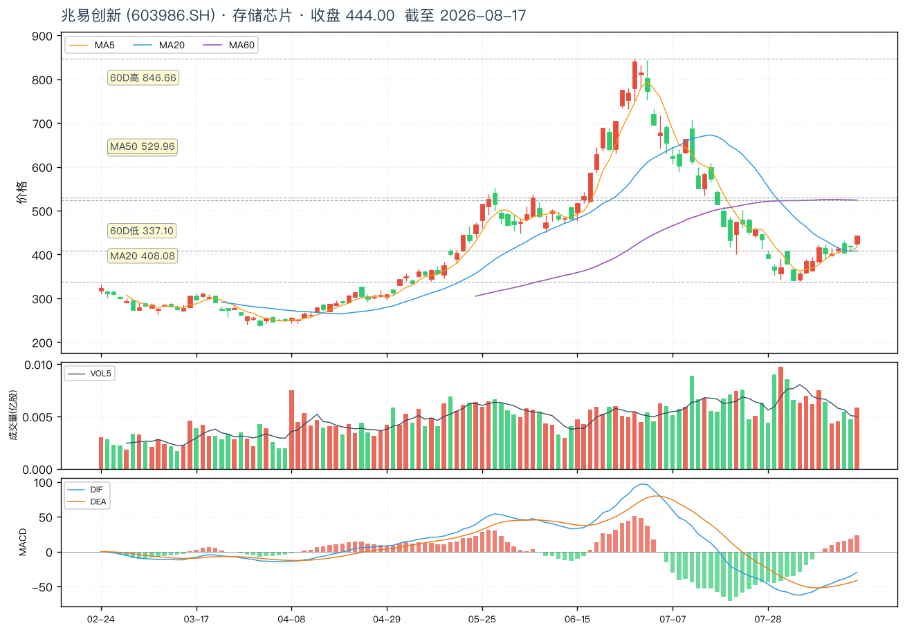
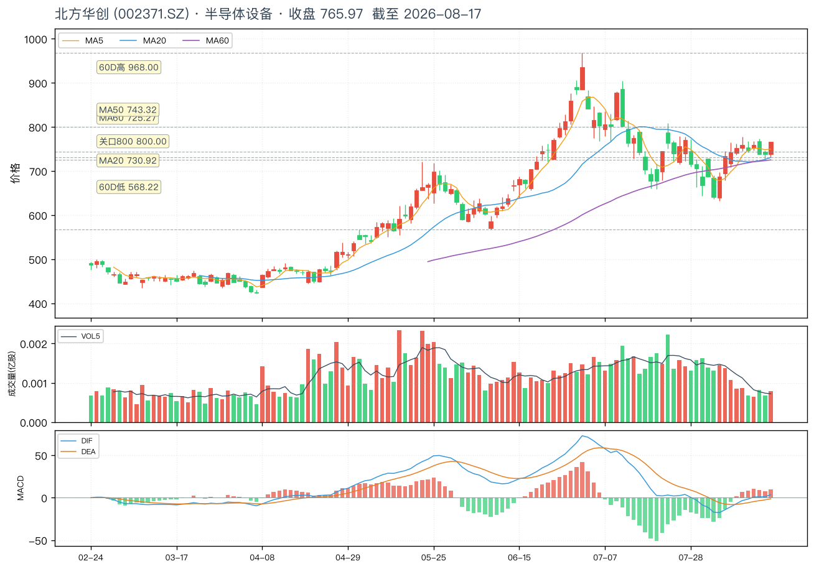
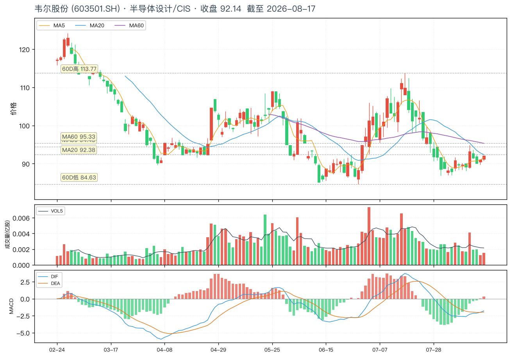
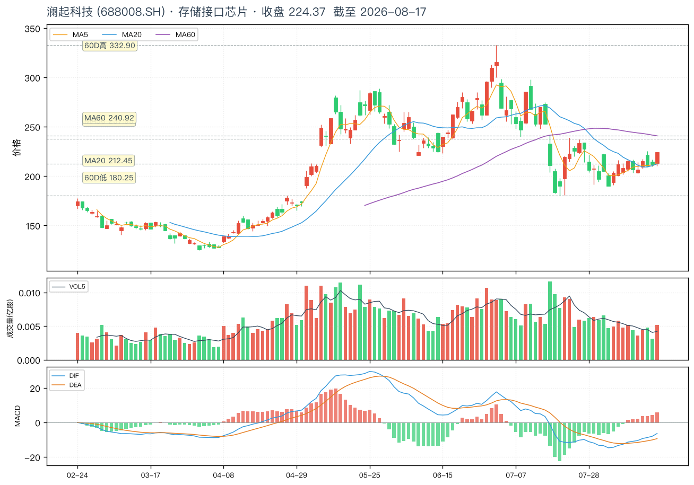
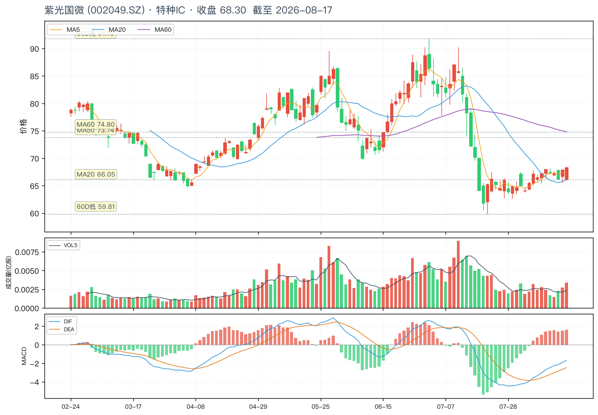
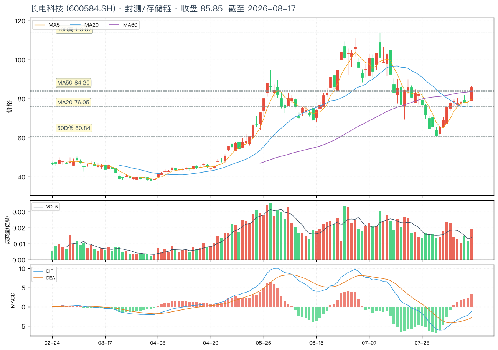
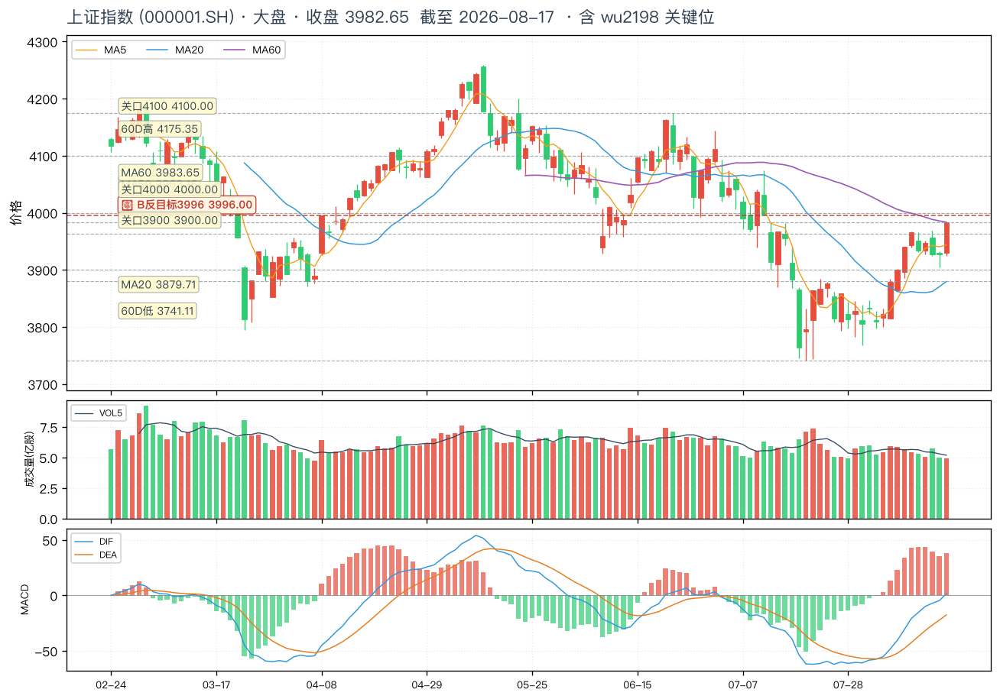
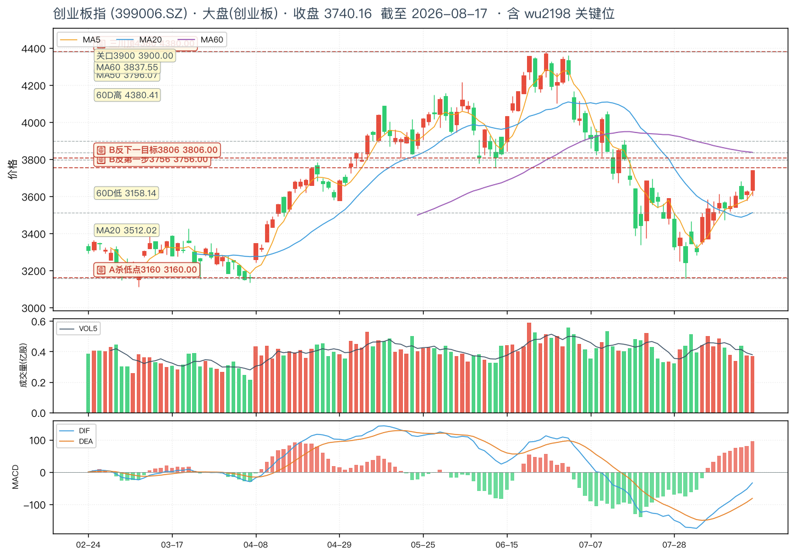

📊 wu2198 投资日报 · 2026-08-17
基于 KOL
@wu2198 (47.3w 粉丝) 最近一天微博 · 自动生成于 2026-08-17 21:00 ·
周一收盘后 · 8/18 周二操作前瞻
📅 数据截止:2026-08-17 (周一收盘)
📝 抓取微博 9 条 (过滤 2 置顶)
🟢 上证 8/17 收 3982.65 (卡 3996 B反目标前 13 点)
🟢 创业板 8/17 收 3740.16 (卡 3756 B反第一步前 16 点)
🟢 两市成交 24025 亿 (+2459 亿) · 流入 597.85 亿 · 4335 涨
🟢🔥 长鑫 8/17 +12.00% 收 61.80 (4.13 万亿=多个神酒)
🟢 闪迪/美光 8/17 盘前 +4% (美股存储)
🟢 博主立场:看多 · B反继续 · 科技底部品种有局部机会
⚠️ 延续 8/15 茅台警示(国家队清仓)
①8/17 当日行情摘要
上证指数 · 卡 B反目标 3996 前
3982.65 / 3996
8/17 收 3982.65(+0.93%)— 仅差 13.35 点到博主 B反目标 3996,B反继续,盘中冲 3996 概率大
创业板指 · 卡 B反第一步 3756 前
3740.16 / 3756
8/17 收 3740.16(+2.25%)— 差 15.84 点到博主 B反第一步 3756,从博主提示 3160 至今指数 +580 点
资金/成交 · 量价齐升
24025 亿 / +597.85 亿
8/17 截止 15:00 两市成交 24025 亿元(+2459 亿),4335 只上涨,资金净流入 597.85 亿元 — 量价齐升,趋势确立
博主板块方向
🟢🔥 存储芯片 + 🟢 半导体设备 + 🟢 科技底部品种
8/17 15:08「业绩明显增长、行业向好、过去 20 个月没涨幅的科技品种预计还有局部机会」+ 8/17 17:01 长鑫 +12% (存储链直接验证)
⚠️ 延续 8/15 警示
🔴 白酒/贵州茅台回避
8/15 06:43 博主警示「中央汇金证金公司集体清仓贵州茅台」+ 8/17 17:01 间接反讽「长鑫市值 4.13 万亿 = 多少个神酒」
②博主核心观点(8/17 当天 7 条操盘贴)
⏱ 08-17 20:20 · 美股
🔁3 💬64 👍1369
🌍 美股速报(存储芯片)
闪廸、美光……盘前涨4%左右！
⏱ 08-17 17:50 · 互动
🔁14 💬378 👍4659
互动帖(实为长文复制)
收到请回复 666 或点赞支持一下!(原帖为 15:08 长文再传播,见下条核心)
⏱ 08-17 17:01 · 行业
🔁3 💬81 👍3902
🟢🔥 行业点名(存储芯片/长鑫 + 白酒反讽)
长鑫今天收在 61.80 元,涨幅 12.00%,总市值 4.13 万亿元……求等于多少个神酒的市值?
⏱ 08-17 16:55 · 表情
🔁2 💬156 👍3714
表情互动(实为创业板验证贴)
[4 个思考表情](配套转发:「创业板指数即使你没做股票,从我提示的 3160 到目前,单单指数也可以赚接近 500 点...你要是没赚钱,我是无言以对了!」)
⏱ 08-17 15:08 · 🔥 长文热帖
🔁129 💬1039 👍10902
🟢🔥 大盘判断 + 操作建议(当日唯一长文操盘贴)
按市场节奏看,符合预期的 B 反过程,大盘指数将继续冲 3996 方向;创业板指数收复 3756 点之后将继续向 3806 拓展空间。在 B 反趋势没有变的情况下,可以继续寻找个股的反机会;一些业绩明显增长,行业向好,过去 20 个月没有涨幅的科技的品种预计还有局部机会.........
⏱ 08-17 15:02 · 行情
🔁6 💬78 👍6085
🟢 行情速报(量价齐升)
截止 15:00 两市成交了 24025 亿元,有 4335 只个股上涨,大盘资金流入 597.85 亿元,量能比上一交易日增加 2459 亿元。
⏱ 08-17 14:57 · 大盘
🔁22 💬555 👍8833
🟢 大盘判断(创业板验证)
创业板指数即使你没做股票,从我提示的 3160 到目前,单单指数也可以赚接近 500 点....你要是没赚钱,我是无言以对了!
⏱ 08-17 14:52 · 技术位
🔁32 💬512 👍7868
🟢 技术位(B反框架)
按技术面看创业板指数自前面 4380 点构筑三川顶至所提示的 A 杀目标 3160 点(昨日试了 3158 点),然后展开 B 反弹。那么,初步看 B 反的目标预计在 3756 点左右(会分步伐走)。这只是逐步估计,大家暂不要外传,谢谢!
③最值得投资的 3 个板块(基于 8/17 操盘信号)
板块 ①
存储芯片 🟢🔥(长鑫 +12% + 闪迪美光盘前 +4% 双重验证)
· 锚定信号:8/17 17:01 博主点名长鑫 + 8/17 20:20 闪迪美光盘前 +4%
博主 8/17 用两条原帖直接强化存储芯片方向:① 17:01「长鑫今天收在 61.80 元,涨幅 12.00%,总市值 4.13 万亿元……求等于多少个神酒的市值?」② 20:20「闪廸、美光……盘前涨 4% 左右!」 — 国内(长鑫)+ 海外(闪迪/美光)同步走强,存储芯片周期反转。
核心驱动:① HBM/DDR5 需求爆发 ② AI 算力扩张拉动存储 ③ 长鑫 IPO 预期 + 国产替代 ④ 板块龙头先行(长鑫 +12%,板块宽度高)。
📌 博主原帖 1(8/17 17:01):「长鑫今天收在 61.80 元,涨幅 12.00%,总市值 4.13 万亿元」+ 原帖 2(8/17 20:20):「闪廸、美光……盘前涨 4% 左右!」
- 兆易创新 603986 — A 股存储龙头(NOR Flash + DRAM),8/17 收 444.00,从 60 日低 337 反弹 +31.8%
- 澜起科技 688008 — 存储接口芯片(全球三大供应商之一),8/17 收 224.37,从 60 日低 180 反弹 +24.7%
- 长电科技 600584 — 封测龙头,存储芯片封测核心受益,8/17 收 85.85,从 60 日低 60.84 反弹 +41.1%
板块 ②
半导体设备 / 材料 🟢(科技底部 + 业绩好 + 行业向好)
· 锚定信号:8/17 15:08 博主长文「业绩好+行业向好+20个月没涨幅的科技品种」
博主 8/17 15:08 长文罕见直接定义选股标准:「业绩明显增长,行业向好,过去 20 个月没有涨幅的科技的品种预计还有局部机会」 — 这是 8/14「PCB 铜箔/覆铜板/CPO/存储」板块宽度表态的延续与聚焦,从「已涨板块」切换到「底部启动板块」。
半导体设备是典型「过去 20 个月没涨+业绩好+行业向好」组合:① 国产替代主线 ② 设备订单饱满 ③ 估值处于历史底部(北方华创从 968 高点回调至 568 低,跌 41%)。
📌 博主原帖(8/17 15:08):「业绩明显增长,行业向好,过去 20 个月没有涨幅的科技的品种预计还有局部机会」
- 北方华创 002371 — 半导体设备龙头(刻蚀/PVD/氧化),8/17 收 765.97,从 60 日低 568 反弹 +34.8%,MA20 730 拐头向上
- 韦尔股份 603501 — 半导体设计/CIS 图像传感器全球第三,8/17 收 92.14,正好压在 MA20 92.37 关键位
板块 ③
创业板科技股 / 底部反弹品种 🟢(博主 B反 + 3160→3806 趋势)
· 锚定信号:8/17 14:52 框架 + 14:57 验证 + 15:08 拓展
博主 8/17 用三条原帖强化创业板 B 反框架:① 14:52「创业板 4380(三川顶)→ 3160(A杀,已到)→ B反目标 3756」② 14:57「创业板 3160 到目前赚 500 点」③ 15:08「收复 3756 后继续向 3806 拓展」 — 创业板 8/17 收 3740.16,正好卡在 3756 前 16 点,即将突破。
核心逻辑:① 创业板是博主 8/17 当天点名最多的指数 ② 存储/半导体设备/科技股的核心标的多数在创业板或科创板 ③ B反目标 3806 还有 1.8% 空间,趋势确立。
📌 博主 14:52 + 14:57 + 15:08 三条原帖形成完整「4380 → 3160 → 3756 → 3806」框架
- 紫光国微 002049 — 特种 IC 龙头(FPGA/智能卡),8/17 收 68.30,从 60 日低 59.81 反弹 +14.2%
- 澜起科技 688008(科创板)— 存储接口芯片,与创业板共振
④6 只个股深度(8/17 收盘价 + 关键位)
①
兆易创新 603986.SH · A 股存储龙头
存储芯片
A 股 NOR Flash + DRAM 存储芯片龙头,直接对标博主 8/17 17:01 点名的「长鑫」产业链。8/17 收 444.00,从 60 日低 337.10 反弹 +31.8%,处于 B 反中段。
📌 8/17 收盘 444.00 | MA20 408(已突破)/ MA60 524(强阻力)/ 60 日低 337.10 / 60 日高 846.66
- 上涨催化:博主 8/17 17:01 长鑫 +12% 验证 + 8/17 20:20 闪迪美光盘前 +4% 强化
- 技术形态:从 7/22 低点 337 反弹,8/17 站上 MA20(408),但仍在 MA60(524)下方
- 关键位:支撑 408 (MA20) / 337 (60D 低) · 阻力 524 (MA60) / 600 / 800
- ⚠️ 距 MA60 (524) 还有 18% 空间,期间震荡可能加大
- ⚠️ 与长鑫同步,长鑫若回调可能拖累
兆易创新 (603986.SH) 日线
603986.SH

关键位 MA20 408(支撑)/ MA60 524(阻力)/ 60D 低 337 / 60D 高 847 居左虚线 · 8/17 收 444.00,博主 8/17 17:01 长鑫 +12% 受益
②
北方华创 002371.SZ · 半导体设备龙头
半导体设备
A 股半导体设备绝对龙头(刻蚀/PVD/氧化/CVD),博主 8/17 15:08 长文「业绩好+行业向好+20个月没涨的科技品种」最契合的标的之一。8/17 收 765.97,从 60 日低 568.22 反弹 +34.8%,MA20(730.92)已拐头向上。
📌 8/17 收盘 765.97 | MA20 730.92(已突破并拐头)/ MA60 725.27 / 60 日低 568.22 / 60 日高 968.00
- 上涨催化:国产替代主线 + 设备订单饱满 + 博主「20个月没涨」标准
- 技术形态:从 7/22 低点 568 反弹,8/17 站上 MA20 + MA60 双均线(双金叉),趋势确立
- 关键位:支撑 730 (MA20) / 700 · 阻力 800 / 900 / 968 (60D 高)
- ⚠️ 已反弹 +34.8%,800 整数位是首个阻力
- ⚠️ 若半导体板块整体调整,设备股弹性大
北方华创 (002371.SZ) 日线
002371.SZ

关键位 MA20 731(支撑)/ 800(阻力)/ 968(60D 高) 居左虚线 · 8/17 收 765.97,博主 15:08「20个月没涨科技」最契合标的
③
韦尔股份 603501.SH · 半导体设计/CIS 龙头
半导体设计 / CIS
全球第三大 CIS(图像传感器)设计公司,博主 8/17 15:08「业绩好+行业向好+20个月没涨的科技」组合的标准标的。8/17 收 92.14,正好压在 MA20 92.38 关键位 — 是博主选股框架中典型「反弹到均线遇阻」状态,需观察能否突破。
📌 8/17 收盘 92.14 | MA20 92.38(关键位,正好压在收市价)/ 60 日低 84.63 / 60 日高 113.77
- 上涨催化:汽车 CIS + 智能手机 CIS 复苏 + 博主「20个月没涨」标准
- 技术形态:从 7/22 低点 84.63 反弹,8/17 正好触 MA20(92.38) — 关键突破位
- 关键位:支撑 90 (MA20) / 84.63 (60D 低) · 阻力 95 / 100 / 113.77 (60D 高)
- ⚠️ 正卡在 MA20 关键位 — 突破向上则看 100,跌破则回踩 84-86
- ⚠️ 收盘 92.14 < MA20 92.38,显示空方略占优
韦尔股份 (603501.SH) 日线
603501.SH

关键位 MA20 92.38(正好压在收市价)/ 60D 低 84.63 / 60D 高 113.77 居左虚线 · 8/17 收 92.14 卡 MA20,关键突破位
④
澜起科技 688008.SH · 存储接口芯片龙头(科创板)
存储接口芯片
全球三大 DDR5 内存接口芯片供应商之一,直接受益博主 8/17 17:01 长鑫 +12% 驱动的存储芯片周期反转。8/17 收 224.37,从 60 日低 180.25 反弹 +24.5%。
📌 8/17 收盘 224.37 | MA20 212.45(已突破)/ MA60 240.92(阻力) / 60 日低 180.25 / 60 日高 332.90
- 上涨催化:DDR5 渗透率提升 + AI 服务器需求 + 长鑫 +12% 板块联动
- 技术形态:从 7/22 低点 180 反弹,8/17 站上 MA20(212),但仍在 MA60(241)下方
- 关键位:支撑 212 (MA20) / 180 (60D 低) · 阻力 241 (MA60) / 280 / 332 (60D 高)
- ⚠️ 科创板标的,波动大
- ⚠️ MA60(241)是首个强阻力,距现价 +7.4%
澜起科技 (688008.SH) 日线
688008.SH

关键位 MA20 212(支撑)/ MA60 241(阻力)/ 60D 高 333 居左虚线 · 8/17 收 224.37,DDR5 龙头 + 长鑫联动
⑤
紫光国微 002049.SZ · 特种 IC 龙头(FPGA)
特种 IC / 创业板
A 股 FPGA + 智能卡芯片龙头,直接受益博主 8/17 14:57 强调的「创业板 3160→3806」B 反趋势。8/17 收 68.30,从 60 日低 59.81 反弹 +14.2%,处于 B 反初段。
📌 8/17 收盘 68.30 | MA20 66.05(已突破)/ MA60 74.80(阻力) / 60 日低 59.81 / 60 日高 91.79
- 上涨催化:特种 IC 国产替代 + 创业板 B反 + 博主「业绩好+行业向好」
- 技术形态:从 7/22 低点 59.81 反弹,8/17 站上 MA20(66),但仍在 MA60(75)下方
- 关键位:支撑 66 (MA20) / 60 (60D 低) · 阻力 75 (MA60) / 80 / 92 (60D 高)
- ⚠️ 反弹幅度 +14.2% 弱于其他存储/设备股,需观察能否加速
紫光国微 (002049.SZ) 日线
002049.SZ

关键位 MA20 66(支撑)/ MA60 75(阻力)/ 60D 高 92 居左虚线 · 8/17 收 68.30,创业板 B反 + 特种 IC 国产替代
⑥
长电科技 600584.SH · 封测龙头(存储链)
封测 / 存储链
A 股封测龙头,直接受益博主 8/17 17:01 长鑫 +12% 驱动的存储芯片产业链 — 封测是存储芯片产业链最下游、最敏感的环节。8/17 收 85.85,从 60 日低 60.84 反弹 +41.1%,是 6 只个股中反弹幅度最大的。
📌 8/17 收盘 85.85 | MA20 76.05(已突破)/ MA60 83.63(刚突破) / 60 日低 60.84 / 60 日高 113.87
- 上涨催化:长鑫 +12% 直接利好封测 + 国产存储链 + 板块联动
- 技术形态:从 7/22 低点 60.84 强势反弹,8/17 站上 MA20 + MA60 双均线 — 趋势确立
- 关键位:支撑 76 (MA20) / 60.84 (60D 低) · 阻力 100 (整数位) / 113.87 (60D 高)
- ⚠️ 反弹幅度 +41.1% 最大,需注意短期获利回吐
- ⚠️ 100 整数位是首个强阻力
长电科技 (600584.SH) 日线
600584.SH

关键位 MA20 76(支撑)/ 100(整数位阻力)/ 60D 高 114 居左虚线 · 8/17 收 85.85,封测龙头,反弹 +41.1% 最强
⑤大盘 K 线(关键位居左虚线)
上证指数 日线
000001.SH

关键位 3996(B反目标,距 8/17 收 3982.65 仅 13.35 点) 居左虚线 · 8/17 收 3982.65 涨 0.93%,试 3996 概率大,MACD 已在零轴上方金叉
创业板指 日线
399006.SZ

关键位 3160(A杀低点,已到)/ 3756(B反第一步,距 3740.16 仅 15.84 点)/ 3806(下一目标)/ 4380(三川顶,长周期阻力) 居左虚线 · 8/17 收 3740.16 涨 2.25%,MACD 金叉向上
⑥关键点位速查
| 点位 | 含义 | 来源 |
|---|
| 上证指数 (000001.SH) · 8/17 收 3982.65 |
| 3996 | B 反目标 (博主 8/17 15:08 原帖「大盘指数将继续冲 3996 方向」) — 距 8/17 收 3982.65 仅 13.35 点 | 来自博主原帖 |
| 3900 | 整数位支撑 | Tushare 历史/整数位 |
| 4000 | 整数位阻力 (8/17 已逼近) | Tushare 历史/整数位 |
| 4100 | B 反拓展目标 | Tushare 历史 |
| 4175 | 60 日高 | Tushare 历史 |
| 创业板指 (399006.SZ) · 8/17 收 3740.16 |
| 3160 | A 杀低点 (博主 8/16 预测,8/15 实际试 3158,已到) — B 反起点 | 来自博主原帖 + Tushare |
| 3756 | B 反第一步目标 (博主 8/17 14:52 + 15:08 关键位) — 距 8/17 收 3740.16 仅 15.84 点 | 来自博主原帖 |
| 3806 | B 反下一目标 (博主 8/17 15:08「收复 3756 后向 3806 拓展」) — 距 8/17 收 +1.8% | 来自博主原帖 |
| 4380 | 三川顶 (博主 8/17 14:52「前面 4380 构筑三川顶」) — 长周期阻力 | 来自博主原帖 |
| 兆易创新 (603986.SH) · 8/17 收 444.00 |
| 408 | MA20 支撑 (已突破) | Tushare 自动 |
| 524 | MA60 阻力 | Tushare 自动 |
| 337 | 60 日低 (B 反起点) | Tushare 自动 |
| 847 | 60 日高 (B 反目标) | Tushare 自动 |
| 北方华创 (002371.SZ) · 8/17 收 765.97 |
| 731 | MA20 支撑 (已突破,拐头向上) | Tushare 自动 |
| 725 | MA60 支撑 (已突破) | Tushare 自动 |
| 800 | 整数位阻力 (首个目标) | Tushare 自动/整数位 |
| 968 | 60 日高 | Tushare 自动 |
| 韦尔股份 (603501.SH) · 8/17 收 92.14 |
| 92.38 | MA20 关键位 — 正好压在收市价(收盘 92.14 < MA20 92.38) | Tushare 自动 |
| 84.63 | 60 日低 (B 反起点) | Tushare 自动 |
| 113.77 | 60 日高 | Tushare 自动 |
| 澜起科技 (688008.SH) · 8/17 收 224.37 |
| 212 | MA20 支撑 (已突破) | Tushare 自动 |
| 241 | MA60 阻力 | Tushare 自动 |
| 333 | 60 日高 | Tushare 自动 |
| 紫光国微 (002049.SZ) · 8/17 收 68.30 |
| 66 | MA20 支撑 (已突破) | Tushare 自动 |
| 75 | MA60 阻力 | Tushare 自动 |
| 92 | 60 日高 | Tushare 自动 |
| 长电科技 (600584.SH) · 8/17 收 85.85 |
| 76 | MA20 支撑 (已突破) | Tushare 自动 |
| 83.6 | MA60 支撑 (刚突破) | Tushare 自动 |
| 100 | 整数位阻力 (首个目标) | Tushare 自动/整数位 |
| 114 | 60 日高 | Tushare 自动 |
⑦博主警示与风险提示
⚠️ 8/15 06:43 博主警示延续:汇金证金公司集体清仓贵州茅台 (5622 赞)
- 博主原文「#中央汇金证金公司集体清仓贵州茅台#股东人数增多了,就说明了问题!」 — 这是博主 4 月以来对白酒板块的持续警示的最新一次升级。
- 8/17 17:01 博主又用「长鑫市值 4.13 万亿 = 多少个神酒?」的对比方式间接反讽白酒 — 长鑫(科技/存储)市值已超神酒(白酒/茅台)N 倍,这是博主鲜明的「看多科技/警示白酒」立场。
- 关键含义:国家队清仓 + 股东人数增多 = 筹码分散到散户 + 主力撤退信号。
- 操作建议:白酒/贵州茅台 🔴 回避,直到博主态度转变或技术面重新走强。
⚠️ 博主历史信号(8/8):「已撤离本金+去年盈利一半,预计今年不再调回」
- 博主实际行动比预测更看空。虽 8/17 反复强调「B 反继续」「B 反未坏」,但 8/8 已经把本金+去年盈利一半撤出市场。
- 8/17 看多只是「结构性 / 局部性」(科技底部品种),不是「整体性 / 战略性」,操作上注意节奏与仓位控制。
- 操作建议:跟随博主观点但降低仓位至 50-60%,核心持仓聚焦博主 8/17 强调的「业绩好+行业向好+20个月没涨幅的科技品种」。
⚠️ 板块轮动加速风险:博主 8/14 已预警
- 博主 8/14 14:57 资金面警示:两市成交 21313 亿 · 量能 -4107 亿 · 资金流出 193 亿(8/14 数据)。
- 8/17 数据已大幅改善(24025 亿 / 流入 597.85 亿),但若 8/18 出现「量缩+资金流出」,则板块轮动可能加速,追高风险大。
- 应对:8/18 开盘前 30 分钟重点观察博主早盘表态 + 资金流向。
⑧博主最近一天全部微博(8/17 9 条,过滤 2 置顶)
| 时间 | 互动 | 标签 | 正文摘要 |
|---|
| 08-17 20:20 | r3 c64 l1369 | 🌍 美股速报 | 闪廸、美光……盘前涨 4% 左右! |
| 08-17 17:50 | r14 c378 l4659 | 互动帖 | 收到请回复 666 或点赞支持一下!(长文复制) |
| 08-17 17:20 | r10 c514 l3837 | 互动帖 | 问个事情:接吻为什么要闭眼? |
| 08-17 17:01 | r3 c81 l3902 | 🟢🔥 存储芯片 + 白酒反讽 | 长鑫今天收在 61.80 元,涨幅 12.00%,总市值 4.13 万亿元……求等于多少个神酒的市值? |
| 08-17 16:55 | r2 c156 l3714 | 表情互动 | [4 个思考表情] (配套转发创业板验证贴) |
| 08-17 15:08 | r129 c1039 l10902 | 🔥 大盘判断 + 操作建议 | B 反继续,大盘→3996,创业板收复 3756→3806;业绩好+行业向好+20个月没涨的科技品种有局部机会。 |
| 08-17 15:02 | r6 c78 l6085 | 🟢 行情速报 | 两市成交 24025 亿,4335 只上涨,资金流入 597.85 亿,量能 +2459 亿。 |
| 08-17 14:57 | r22 c555 l8833 | 🟢 大盘判断 | 创业板 3160 到目前赚 500 点....你要是没赚钱,我是无言以对了! |
| 08-17 14:52 | r32 c512 l7868 | 🟢 技术位(B反框架) | 创业板 4380(三川顶)→ 3160(A杀,已到)→ B反 3756(分步伐走)。 |
⑨综合投资结论(8/18 周二操作前瞻)
🟢 博主立场:看多 — B反继续 · 科技底部品种有局部机会 · 警示白酒
核心观点:博主 8/17 用三条原帖(14:52 + 14:57 + 15:08)形成完整的「创业板 4380 → 3160 → 3756 → 3806」B 反框架,叠加 8/17 17:01 长鑫 +12% 和 8/17 20:20 闪迪美光盘前 +4% 的存储芯片双重验证,加上 8/17 15:02 资金流入 597.85 亿 + 量能 +2459 亿的量价齐升,B 反趋势确立,科技底部品种是核心方向。
3 大板块:① 存储芯片(博主 17:01 长鑫 + 20:20 闪迪美光,双重 🟢🔥)兆易创新/澜起科技/长电科技 ② 半导体设备/材料(博主 15:08「业绩好+行业向好+20个月没涨」)北方华创/韦尔股份 ③ 创业板科技股/底部反弹(博主 14:52+14:57 框架)紫光国微/澜起科技。
6 只个股:
兆易创新 444.00
北方华创 765.97
韦尔股份 92.14
澜起科技 224.37
紫光国微 68.30
长电科技 85.85
(价格=8/17 收盘 · 兆易/北方华创/澜起/长电科技 BUY · 韦尔/紫光 HOLD)
8/18 周二操作建议:
✅ 加仓:北方华创(突破 731 MA20 后回踩 730-750)、长电科技(突破 76 MA20 后回踩 80-84)
✅ 加仓:澜起科技(突破 212 MA20 后回踩 215-220)
✅ 持有:兆易创新(突破 408 MA20,关注 524 MA60 阻力)
⚠️ 观察:韦尔股份(正卡 MA20 92.38 关键位,突破则看 95-100,跌破则回踩 84)
⚠️ 观察:紫光国微(突破 66 MA20,关注 75 MA60 阻力)
🔴 回避:白酒板块(贵州茅台 600519),博主 8/15 警示国家队清仓 + 8/17 17:01 间接反讽
⚠️ 总仓位建议:50-60%(跟随博主 8/8 实际行动的防御姿态)
⚠️ 大盘关注:沪指 3996 B反目标(距现价 13.35 点)/ 创业板 3756(距现价 15.84 点)/ 3806 下一目标
风险提示:① 8/17 量能 +2459 亿 + 资金流入 597.85 亿,但若 8/18 出现「量缩+资金流出」则板块轮动加速 ② 6 支个股均处于 B 反中段,部分(长电+41.1% / 北方华创+34.8%)已反弹较多,需注意回吐 ③ 8/15 博主警示白酒延续,8/17 17:01 长鑫 vs 茅台对比强化,白酒短期回避 ④ 博主 8/8 已撤离本金+盈利一半,8/17 看多是结构性/局部性,不是战略性,操作上注意节奏与仓位控制 ⑤ 沪指 3996 是博主 B反目标,可能一次冲过或受阻回落,需观察 8/18 早盘博主表态。